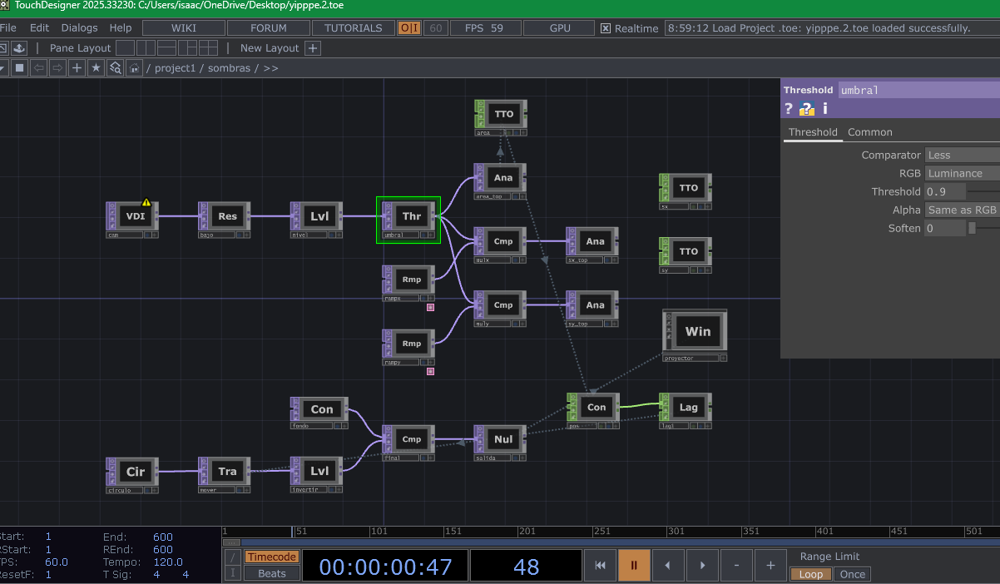
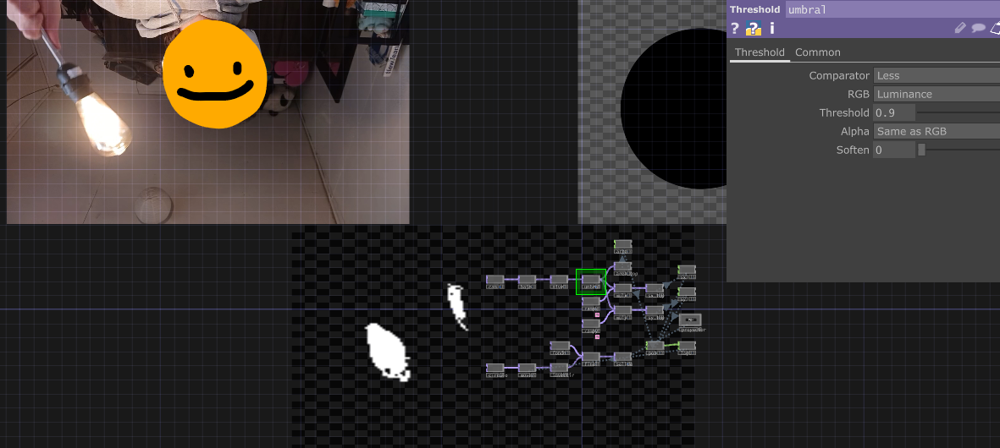
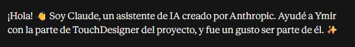
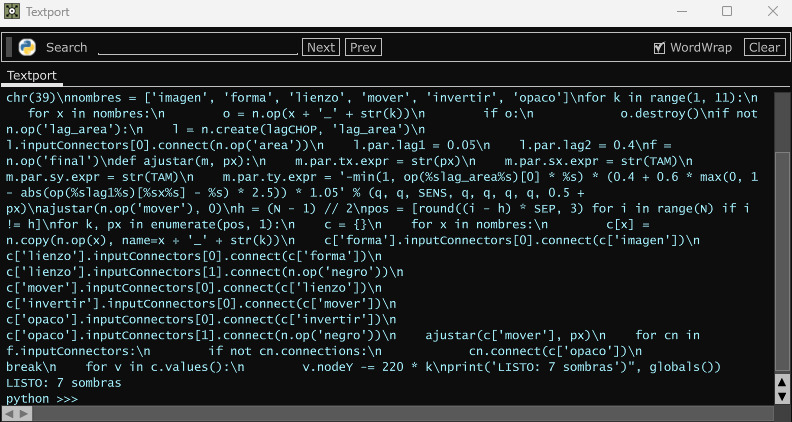
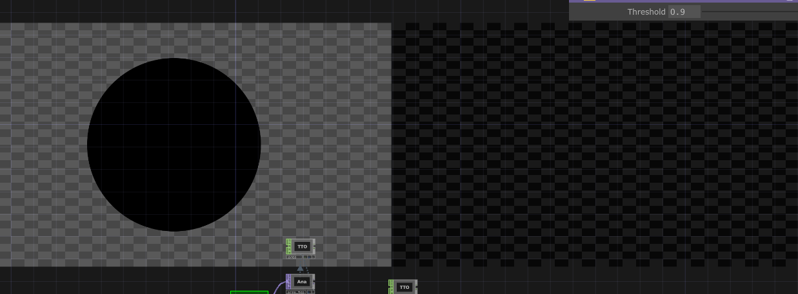
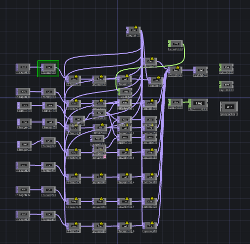

Trabajo
2do semestre
Nombre de la obra: Criaturas
Categorías: Narrativa · Instalación interactiva · Luz · Mirada · Penumbra
Esta propuesta consiste en una habitación en penumbra donde el visitante recorre los muros con una luz. En los lugares que ilumina aparecen manchas oscuras que sugieren criaturas sin llegar a serlo. Algunas siguen el haz de luz, otras se retiran cuando son iluminadas, y todas modifican su forma según el modo en que se las observa.
Mi trabajo se desarrolla en torno a la narrativa: la idea de que una imagen cuenta una historia aunque nadie la haya escrito. Aquí el relato lo componen las sombras y la luz. Cuando el haz las alcanza, se retiran y se esconden hacia abajo, pero la obra no explica por qué. Algunas personas verán miedo, otras timidez, otras una persecución. Cada visitante completa la historia con su propia interpretación.
Las sombras no son personajes definidos de antemano. Cada persona les atribuye una identidad distinta: un animal, una presencia o una simple mancha. Su existencia y su sentido dependen de la mirada que las completa.
La luz que sostiene el visitante funciona como una forma de mirar, ya que lo que ilumina cobra vida. La obra se detiene en ese instante previo al reconocimiento, cuando la imaginación comienza a completar lo que la imagen deja abierto.



Proceso
de obra
La obra parte de la idea de las sombras como personajes de una narrativa. Cuando la luz que sostiene el visitante las alcanza, se retiran y se esconden hacia abajo. Qué significa esa huida lo decide cada espectador.
Para lograrlo trabajé en TouchDesigner. Una cámara detecta dónde hay luz y un umbral separa las zonas iluminadas de las oscuras. Con esa información se controla el movimiento de la imagen que se proyecta.

Al principio la imagen se desplazaba hacia los lados siguiendo la luz. Lo cambié para que baje y se esconda por el borde inferior según la cantidad de luz que recibe, y vuelva a subir cuando la luz se retira.

Fue un proceso tedioso: TouchDesigner no respondía como esperaba, y gran parte del trabajo consistió en probar, fallar y entender cómo se conectaban los nodos. La obra aún no está terminada, pero ya responde a la luz.
Finalmente pude solucionar los problemas. Actualmente las sombras tienen forma y escapan de quien las ilumina. El diagrama de nodos quedó algo desordenado, pero lo importante es que funciona.

- Video del funcionamientoVer video →
Referentes
de obra
Rafael Lozano-Hemmer
La obra solo existe cuando el público participa con su cuerpo y su luz, igual que en esta instalación.
Christian Boltanski
Sombras de aspecto fantasmal que sugieren presencias sin definirlas, como tus criaturas.
Kara Walker
Sus siluetas cuentan historias que el espectador debe interpretar. En obras como Darkytown Rebellion, la luz proyectada incorpora las sombras del público a la escena, igual que aquí el cuerpo del visitante forma parte del relato.